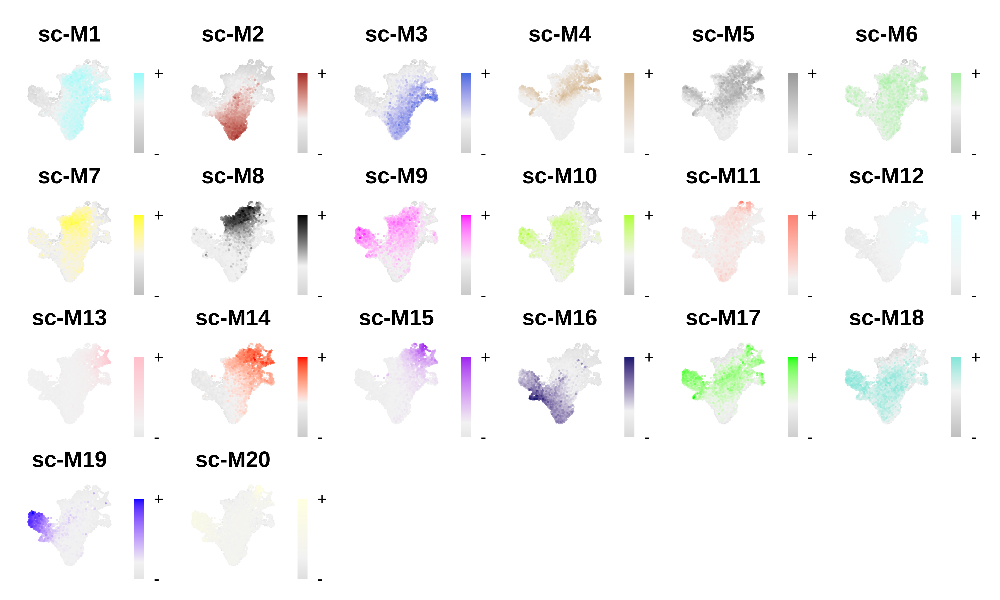
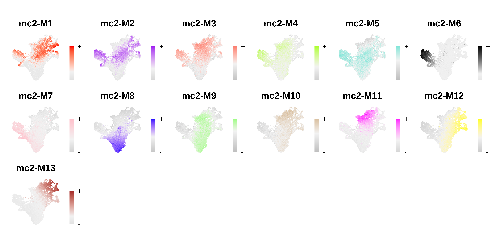
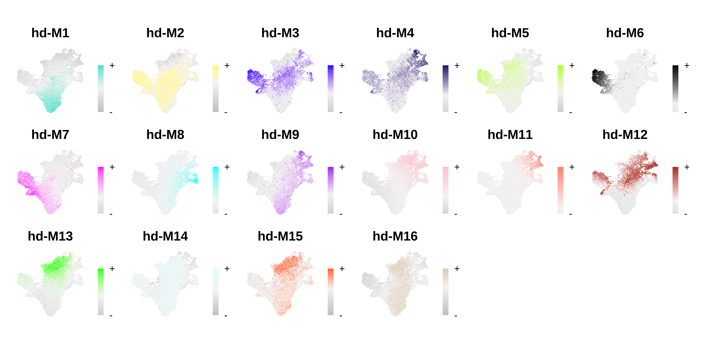
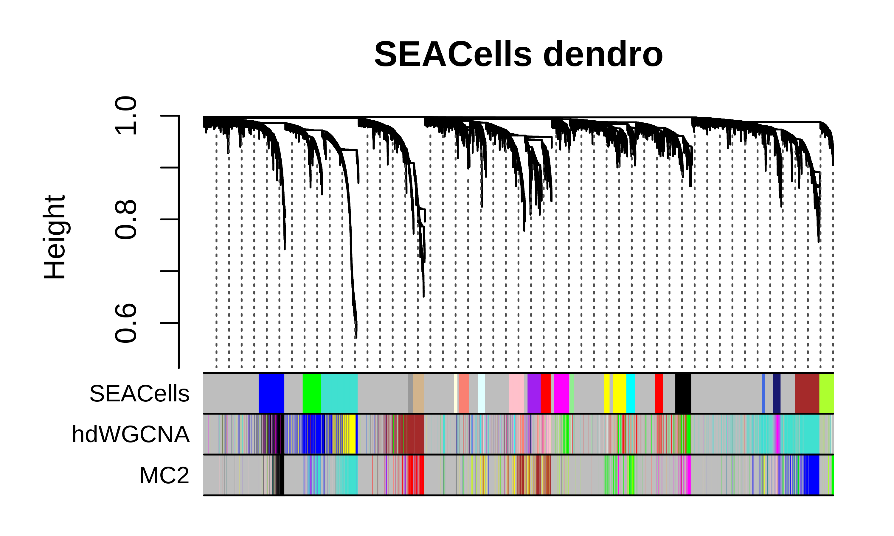
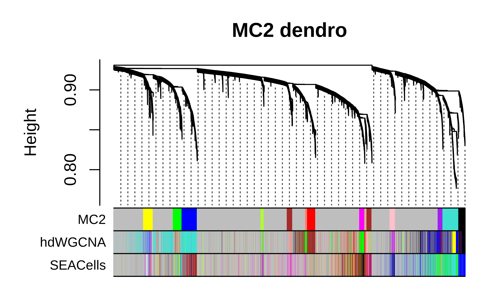
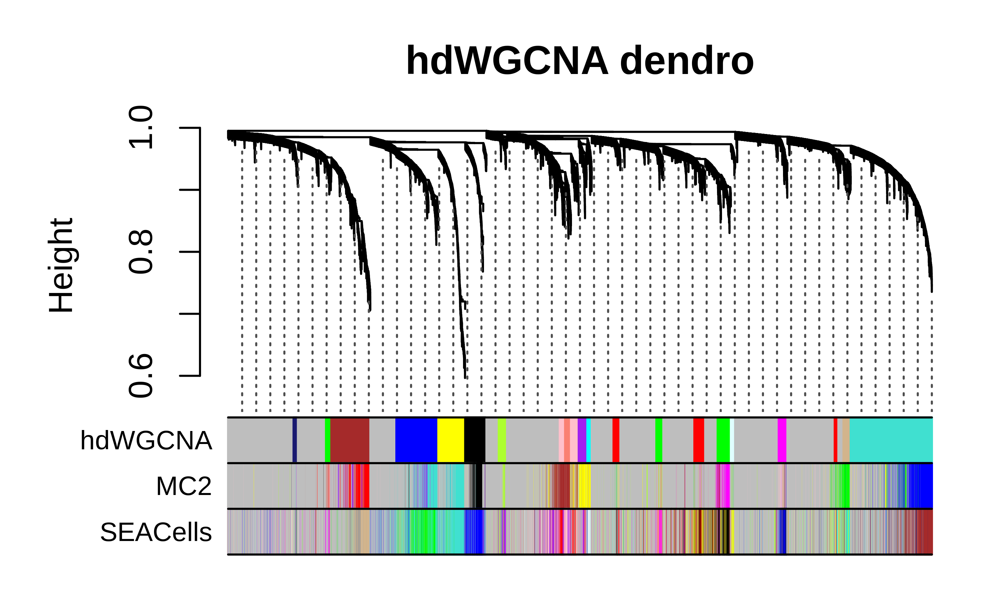

Alternative metacell algorithms
other_metacells.RmdIn this tutorial, we demonstrate an advanced analysis showing how to use alternative metacell aggregation algorithms for co-expression network analysis. Here we will identify metacells using SEACells and Metacell2 (MC2) using the CD34+ hematopoietic stem and progenitor stem cells dataset provided with SEACells. Both SEACells and MC2 are Python packages, so they are not directly interoperable with hdWGCNA and are not formally included as part of the hdWGCNA package. Thus, in this tutorial we will follow the recommended workflows for SEACells and MC2 in Python, then export the resulting data so they can be loaded into R.
Before getting started with this tutorial, please install SEACells and MC2 using the github links above. I was able to create a conda environment for SEACells as specified in their github, and then install MC2 within that environment.
We can download the practice dataset provided with SEACells for this tutorial:
wget https://dp-lab-data-public.s3.amazonaws.com/SEACells-multiome/cd34_multiome_rna.h5ad -O cd34_multiome_rna.h5adConstructing metacells with SEACells
In this section, we follow the recommended workflow for constructing metacells with SEACells. Here we only show the code, but you may wish to consult the tutorial from the SEACells github page for more information.
Note I tried to run this tutorial on a larger dataset of 60k cells and 30k genes, but SEACells didn’t complete running after several hours. Thus, your mileage may vary depending on your input dataset, and that issue is essentially the reason why this entire tutorial is done using the SEACells hematopoietic stem cell dataset.
# following this tutorial: https://github.com/dpeerlab/SEACells/blob/main/notebooks/SEACell_computation.ipynb
import numpy as np
import pandas as pd
import scanpy as sc
import SEACells
import matplotlib
import matplotlib.pyplot as plt
import seaborn as sns
import scipy
from scipy import io
# load the dataset downloaded above into Python
adata = sc.read_h5ad('cd34_multiome_rna.h5ad')
# retain the unprocessed UMI counts matrix in the .raw slot
raw_ad = sc.AnnData(adata.X)
raw_ad.obs_names, raw_ad.var_names = adata.obs_names, adata.var_names
adata.raw = raw_ad
# process data with SCANPY
# note that we don't scale the data matrix before PCA. this is how
# they do it in the SEACells tutorial so we do it that way here.
sc.pp.normalize_per_cell(adata)
sc.pp.log1p(adata)
sc.pp.highly_variable_genes(adata, n_top_genes=1500)
sc.tl.pca(adata, n_comps=50, use_highly_variable=True)
##################################################################################
# Running SEACells
##################################################################################
# they recommend one metacell for every 75 real cells
n_SEACells = int(np.floor(adata.obs.shape[0] / 75))
build_kernel_on = 'X_pca' # key in ad.obsm to use for computing metacells
# This would be replaced by 'X_svd' for ATAC data
## Additional parameters
n_waypoint_eigs = 10 # Number of eigenvalues to consider when initializing metacells
waypoint_proportion = 0.9 # Proportion of metacells to initialize using waypoint analysis,
# the remainder of cells are selected by greedy selection
# set up the model
model = SEACells.core.SEACells(adata,
build_kernel_on=build_kernel_on,
n_SEACells=n_SEACells,
n_waypoint_eigs=n_waypoint_eigs,
waypt_proportion=waypoint_proportion,
convergence_epsilon = 1e-5)
# Initialize archetypes
model.initialize_archetypes()
# fit the model
model.fit(n_iter=20)
# create aggregated metacell expression dataset
SEACell_ad = SEACells.core.summarize_by_SEACell(adata, SEACells_label='SEACell', summarize_layer='raw')Next, we need to write the data matrices to disk so we can read them into R. There are several different approaches to convert directly between .h5ad and Seurat formats, but I have personally run into a lot of unresolved bugs with these approaches (such as SeuratDisk) so exporting the data using scipy and pandas is more reliable, at least in my experience.
# write the h5ad files in case we want to load them into Python again
adata.write_h5ad('data/tutorial_singlecell.h5ad')
SEACell_ad.write_h5ad('data/tutorial_seacells.h5ad')
################################################################################
# Save components of single-cell dataset
################################################################################
# write obs table
data_dir = 'data/'
adata.obs['UMAP_1'] = adata.obsm['X_umap'][:,0]
adata.obs['UMAP_2'] = adata.obsm['X_umap'][:,1]
adata.obs.to_csv('{}/tutorial_singlecell_obs.csv'.format(data_dir))
# write var table:
adata.var.to_csv('{}/tutorial_singlecell_var.csv'.format(data_dir))
# save the sparse matrix for Seurat:
X = adata.raw.X
X = scipy.sparse.csr_matrix.transpose(X)
io.mmwrite('{}/tutorial_singlecell.mtx'.format(data_dir), X)
# write the PCA
pd.DataFrame(adata.obsm['X_pca']).to_csv('{}/tutorial_singlecell_pca.csv'.format(data_dir))
################################################################################
# Save components of SEACells dataset
################################################################################
# write obs table
SEACell_ad.obs.to_csv('{}/tutorial_seacells_obs.csv'.format(data_dir))
# save the sparse matrix for Seurat:
X = SEACell_ad.X
X = scipy.sparse.csr_matrix.transpose(X)
io.mmwrite('{}/tutorial_seacells.mtx'.format(data_dir), X)If you just want to run SEACells and not MC2, you can skip the next section.
Constructing metacells with MC2
In this section, we follow the recommended workflow for constructing metacells with MC2, using the same dataset that was used for SEACells.
# following this tutorial: https://metacells.readthedocs.io/en/latest/Metacells_Vignette.html
import numpy as np
import pandas as pd
import scanpy as sc
import SEACells
import matplotlib
import matplotlib.pyplot as plt
import seaborn as sns
import scipy
from scipy import io
import os
import anndata as ad
import metacells as mc
import scipy.sparse as sp
import seaborn as sb
from math import hypot
adata = sc.read_h5ad('data/cd34_multiome_rna.h5ad')
# need to run these utilities functions to fix the counts matrix
X = adata.X
mc.utilities.typing.sum_duplicates(X)
mc.utilities.typing.sort_indices(X)
adata.X = X
# set the raw counts matrix
raw_ad = sc.AnnData(adata.X)
raw_ad.obs_names, raw_ad.var_names = adata.obs_names, adata.var_names
adata.raw = raw_ad
# name of the dataset
mc.ut.set_name(adata, 'cd34')
################################################################################
# Cleaning genes
################################################################################
excluded_gene_names = ['IGHMBP2', 'IGLL1', 'IGLL5', 'IGLON5', 'NEAT1', 'TMSB10', 'TMSB4X']
excluded_gene_patterns = ['MT-.*']
mc.pl.analyze_clean_genes(adata,
excluded_gene_names=excluded_gene_names,
excluded_gene_patterns=excluded_gene_patterns,
random_seed=123456)
# combine into a clean gene mask
mc.pl.pick_clean_genes(adata)
################################################################################
# Clean cells
################################################################################
full = adata
properly_sampled_min_cell_total = 800
properly_sampled_max_cell_total = 15000
total_umis_of_cells = mc.ut.get_o_numpy(full, name='__x__', sum=True)
too_small_cells_count = sum(total_umis_of_cells < properly_sampled_min_cell_total)
too_large_cells_count = sum(total_umis_of_cells > properly_sampled_max_cell_total)
too_small_cells_percent = 100.0 * too_small_cells_count / len(total_umis_of_cells)
too_large_cells_percent = 100.0 * too_large_cells_count / len(total_umis_of_cells)
print(f"Will exclude %s (%.2f%%) cells with less than %s UMIs"
% (too_small_cells_count,
too_small_cells_percent,
properly_sampled_min_cell_total))
print(f"Will exclude %s (%.2f%%) cells with more than %s UMIs"
% (too_large_cells_count,
too_large_cells_percent,
properly_sampled_max_cell_total))
properly_sampled_max_excluded_genes_fraction = 0.1
excluded_genes_data = mc.tl.filter_data(full, var_masks=['~clean_gene'])[0]
excluded_umis_of_cells = mc.ut.get_o_numpy(excluded_genes_data, name='__x__', sum=True)
excluded_fraction_of_umis_of_cells = excluded_umis_of_cells / total_umis_of_cells
too_excluded_cells_count = sum(excluded_fraction_of_umis_of_cells > properly_sampled_max_excluded_genes_fraction)
too_excluded_cells_percent = 100.0 * too_excluded_cells_count / len(total_umis_of_cells)
print(f"Will exclude %s (%.2f%%) cells with more than %.2f%% excluded gene UMIs"
% (too_excluded_cells_count,
too_excluded_cells_percent,
100.0 * properly_sampled_max_excluded_genes_fraction))
mc.pl.analyze_clean_cells(
full,
properly_sampled_min_cell_total=properly_sampled_min_cell_total,
properly_sampled_max_cell_total=properly_sampled_max_cell_total,
properly_sampled_max_excluded_genes_fraction=properly_sampled_max_excluded_genes_fraction)
mc.pl.pick_clean_cells(full)
clean = mc.pl.extract_clean_data(full)
################################################################################
# Forbidden genes
################################################################################
suspect_gene_names = ['PCNA', 'MKI67', 'TOP2A', 'HIST1H1D',
'FOS', 'JUN', 'HSP90AB1', 'HSPA1A',
'ISG15', 'WARS' ]
suspect_gene_patterns = [ 'MCM[0-9]', 'SMC[0-9]', 'IFI.*' ]
suspect_genes_mask = mc.tl.find_named_genes(clean, names=suspect_gene_names,
patterns=suspect_gene_patterns)
suspect_gene_names = sorted(clean.var_names[suspect_genes_mask])
mc.pl.relate_genes(clean, random_seed=123456)
# which groups of genes contain sus genes
module_of_genes = clean.var['related_genes_module']
suspect_gene_modules = np.unique(module_of_genes[suspect_genes_mask])
suspect_gene_modules = suspect_gene_modules[suspect_gene_modules >= 0]
print(suspect_gene_modules)
similarity_of_genes = mc.ut.get_vv_frame(clean, 'related_genes_similarity')
for gene_module in suspect_gene_modules:
module_genes_mask = module_of_genes == gene_module
similarity_of_module = similarity_of_genes.loc[module_genes_mask, module_genes_mask]
similarity_of_module.index = \
similarity_of_module.columns = [
'(*) ' + name if name in suspect_gene_names else name
for name in similarity_of_module.index
]
ax = plt.axes()
sb.heatmap(similarity_of_module, vmin=0, vmax=1, xticklabels=True, yticklabels=True, ax=ax, cmap="YlGnBu")
ax.set_title(f'Gene Module {gene_module}')
plt.savefig('figures/module_heatmap_{}.pdf'.format(gene_module))
plt.clf()
# genes that are correlated with the known forbidden genes
forbidden_genes_mask = suspect_genes_mask
for gene_module in [17, 19, 24, 78, 113, 144, 149]:
module_genes_mask = module_of_genes == gene_module
forbidden_genes_mask |= module_genes_mask
forbidden_gene_names = sorted(clean.var_names[forbidden_genes_mask])
print(len(forbidden_gene_names))
print(' '.join(forbidden_gene_names))
################################################################################
# computing metacells
################################################################################
max_parallel_piles = mc.pl.guess_max_parallel_piles(clean)
print(max_parallel_piles)
mc.pl.set_max_parallel_piles(max_parallel_piles)
with mc.ut.progress_bar():
mc.pl.divide_and_conquer_pipeline(clean,
forbidden_gene_names=forbidden_gene_names,
#target_metacell_size=...,
random_seed=123456)
metacells = mc.pl.collect_metacells(clean, name='cd34.metacells')Now we can save the results so we can load into R later.
# output dir
data_dir = './'
# write the h5ad file
metacells.write_h5ad('{}/tutorial_MC2.h5ad'.format(data_dir))
# write obs/var tables
metacells.obs.to_csv('{}/tutorial_MC2_obs.csv'.format(data_dir))
metacells.var.to_csv('{}/tutorial_MC2_var.csv'.format(data_dir))
# save the sparse matrix for Seurat:
X = metacells.X
X = scipy.sparse.csr_matrix(np.transpose(X).astype(int))
io.mmwrite('{}/tutorial_MC2.mtx'.format(data_dir), X)Load the SEACells and MC2 metacell datasets into R
Here we load the results from running SEACells and MC2 into R, and format the data as Seurat objects.
# single-cell analysis package
library(Seurat)
# plotting and data science packages
library(tidyverse)
library(cowplot)
library(patchwork)
# co-expression network analysis packages:
library(WGCNA)
library(hdWGCNA)
# network analysis & visualization package:
library(igraph)
# using the cowplot theme for ggplot
theme_set(theme_cowplot())
# set random seed for reproducibility
set.seed(12345)
# location of the directory where the data was saved
indir <- './'; data_dir <- './'
# load the UMI counts gene expression matrix
X <- Matrix::readMM(paste0(indir,'tutorial_singlecell.mtx'))
# load harmony matrix
X_pca <- read.table(paste0(indir, 'tutorial_singlecell_pca.csv'), sep=',', header=TRUE, row.names=1)
# load the cell & gene metadata table:
cell_meta <- read.delim(paste0(indir, 'tutorial_singlecell_obs.csv'), sep=',', header=TRUE, row.names=1)
gene_meta <- read.table(paste0(indir, 'tutorial_singlecell_var.csv'), sep=',', header=TRUE, row.names=1)
# get the umap from cell_meta:
umap <- cell_meta[,c('UMAP_1', 'UMAP_2')]
# set the rownames and colnames for the expression matrix:
# for Seurat, rows of X are genes, cols of X are cells
colnames(X) <- rownames(cell_meta)
rownames(X) <- rownames(gene_meta)
rownames(X_pca) <- rownames(cell_meta)
rownames(umap) <- rownames(cell_meta)
# create a Seruat object:
seurat_obj <- Seurat::CreateSeuratObject(
counts = X,
meta.data = cell_meta,
assay = "RNA",
project = "SEACells",
min.features = 0,
min.cells = 0
)
# set PCA reduction
seurat_obj@reductions$pca <- Seurat::CreateDimReducObject(
embeddings = as.matrix(X_pca),
key="PC",
assay="RNA"
)
# set UMAP reduction
seurat_obj@reductions$umap <- Seurat::CreateDimReducObject(
embeddings = as.matrix(umap),
key="UMAP",
assay="RNA"
)
# normalize expression matrix
seurat_obj <- NormalizeData(seurat_obj)
# save data:
saveRDS(seurat_obj, file=paste0(data_dir, 'tutorial_seacells.rds'))
##############################################################
# SEACells metacells
##############################################################
X <- Matrix::readMM(paste0(indir,'tutorial_seacells.mtx'))
cell_meta <- read.delim(paste0(indir, 'tutorial_seacells_obs.csv'), sep=',', header=TRUE, row.names=1)
colnames(X) <- rownames(cell_meta)
rownames(X) <- rownames(gene_meta)
# create a Seruat object:
m_obj <- Seurat::CreateSeuratObject(
counts = X,
assay = "RNA",
project = "SEACells",
min.features = 0,
min.cells = 0
)
saveRDS(m_obj, file=paste0(data_dir, 'tutorial_seacells_metacell.rds'))
##############################################################
# MC2 metacells
##############################################################
# load and type cast to sparse matrix
X <- Matrix::readMM(paste0(indir,'tutorial_MC2.mtx'))
X <- as(X, 'dgCMatrix')
cell_meta <- read.delim(paste0(indir, 'tutorial_MC2_obs.csv'), sep=',', header=TRUE, row.names=1)
gene_meta <- read.table(paste0(indir, 'tutorial_MC2_var.csv'), sep=',', header=TRUE, row.names=1)
colnames(X) <- rownames(cell_meta)
rownames(X) <- rownames(gene_meta)
# create a Seruat object:
m_obj <- Seurat::CreateSeuratObject(
counts = X,
assay = "RNA",
project = "MC2",
min.features = 0,
min.cells = 0
)
saveRDS(m_obj, file=paste0(data_dir, 'tutorial_MC2_metacell.rds'))Plot the UMAP and cluster assignments for the CD34+ HSC dataset:
p <- DimPlot(seurat_obj, group.by='celltype', label=TRUE) +
umap_theme() + coord_equal() + NoLegend() + theme(plot.title=element_blank())
Co-expression network analysis
Now we are ready to perform co-expression network analysis using these metacell datasets. First we need to load the CD34+ HSC dataset.
# directory where the data was saved
data_dir <- './'
# load CD34+ HSC dataset
seurat_obj <- readRDS(paste0(data_dir, "tutorial_seacells.rds"))SEACells
Here we perform co-expression network analysis using the SEACells metacells. We can use the function SetMetacellObject to add the SEACells metacell data to the hdWGCNA experiment.
# load datasets
m_obj <- readRDS(paste0(data_dir, 'tutorial_seacells_metacell.rds'))
# set up hdWGCNA experiment
seurat_obj <- SetupForWGCNA(
seurat_obj,
gene_select = "fraction",
fraction = 0.05,
wgcna_name = 'SEACells'
)
# add the seacells dataset
seurat_obj <- SetMetacellObject(seurat_obj, m_obj)
seurat_obj <- NormalizeMetacells(seurat_obj)
# setup expression matrix
seurat_obj <- SetDatExpr(
seurat_obj,
group_name = 'all',
use_metacells=TRUE,
)
# test soft power threshold
seurat_obj <- TestSoftPowers(seurat_obj)
# compute the co-expression network
seurat_obj <- ConstructNetwork(seurat_obj)
# compute module eigengenes and eigengene-based connectivity
seurat_obj <- ModuleEigengenes(seurat_obj)
seurat_obj <- ModuleConnectivity(seurat_obj)
# rename modules
seurat_obj <- ResetModuleNames(
seurat_obj,
new_name = 'sc-M',
wgcna_name='SEACells'
)
# plot module eigengenes
plot_list <- ModuleFeaturePlot(seurat_obj, order=TRUE, raster=TRUE, alpha=1, restrict_range=FALSE)
# assemble plots
wrap_plots(plot_list, ncol=6)
MC2
Here we perform co-expression network analysis using the MC2 metacells. This is nearly the same as above, but here we add an extra step to ensure that all of the genes selected for WGCNA are in the MC2 metacell object.
m_obj <- readRDS(paste0(data_dir, 'tutorial_MC2_metacell.rds'))
# set up hdWGCNA experiment
seurat_obj <- SetupForWGCNA(
seurat_obj,
gene_select = "fraction",
fraction = 0.05,
wgcna_name = 'MC2'
)
# IMPORTANT:
# in the MC2 code above, we had to exclude some of the genes, so here we have to
# make sure the genes that we selected for WGCNA are actually in the metacell
# dataset
wgcna_genes <- GetWGCNAGenes(seurat_obj)
wgcna_genes <- wgcna_genes[wgcna_genes %in% rownames(m_obj)]
seurat_obj <- SetWGCNAGenes(seurat_obj, wgcna_genes)
# add the MC2 dataset
seurat_obj <- SetMetacellObject(seurat_obj, m_obj)
seurat_obj <- NormalizeMetacells(seurat_obj)
# setup expression matrix
seurat_obj <- SetDatExpr(
seurat_obj,
group_name = 'all',
use_metacells=TRUE,
)
# test soft power threshold
seurat_obj <- TestSoftPowers(seurat_obj)
# compute the co-expression network
seurat_obj <- ConstructNetwork(seurat_obj)
# compute module eigengenes and eigengene-based connectivity
seurat_obj <- ModuleEigengenes(seurat_obj)
seurat_obj <- ModuleConnectivity(seurat_obj)
# rename modules
seurat_obj <- ResetModuleNames(
seurat_obj,
new_name = 'mc2-M',
wgcna_name='MC2'
)
# plot module eigengenes
plot_list <- ModuleFeaturePlot(seurat_obj, order=TRUE, raster=TRUE, alpha=1, restrict_range=FALSE)
# assemble plots
wrap_plots(plot_list, ncol=6)
hdWGCNA
Lastly, we run the hdWGCNA metacell algorithm so we can compare the results of the three different methods. Since MC2 and SEACells don’t aggregate metacells separately by cluster or biological replicate, here we run hdWGCNA in the same manner where metacells are constructed for the whole dataset. This means that some metacells will be a mix of different cell types, which is also the case in SEACells and MC2.
# set up hdWGCNA experiment
seurat_obj <- SetupForWGCNA(
seurat_obj,
gene_select = "fraction",
fraction = 0.05,
wgcna_name = 'hdWGCNA'
)
# set up dummy variable so we can run MetacellsByGroups for all clusters together
seurat_obj$all_cells <- 'all'
# run hdWGCNA metacell aggregation
seurat_obj <- MetacellsByGroups(
seurat_obj = seurat_obj,
group.by = "all_cells",
k = 50,
target_metacells=250,
ident.group = 'all_cells',
min_cells=0,
max_shared=5,
)
seurat_obj <- NormalizeMetacells(seurat_obj)
# setup expression matrix
seurat_obj <- SetDatExpr(
seurat_obj,
group_name = 'all',
use_metacells=TRUE,
)
# test soft power threshold
seurat_obj <- TestSoftPowers(seurat_obj)
# compute the co-expression network
seurat_obj <- ConstructNetwork(seurat_obj)
# compute module eigengenes and eigengene-based connectivity
seurat_obj <- ModuleEigengenes(seurat_obj)
seurat_obj <- ModuleConnectivity(seurat_obj)
# rename modules
seurat_obj <- ResetModuleNames(
seurat_obj,
new_name = 'hd-M',
wgcna_name='hdWGCNA'
)
# plot module eigengenes
plot_list <- ModuleFeaturePlot(seurat_obj, order=TRUE, raster=TRUE, alpha=1, restrict_range=FALSE)
# assemble plots
wrap_plots(plot_list, ncol=6)
Comparing co-expression modules across methods
For this CD34+ HSC dataset, each of the three metacell methods resulted in a set of gene modules, and the module eigengene FeaturePlots look like there is cell-type/lineage specificity of these modules. In this section, we will compare the results of these different analyses to get an idea of what is shared and distinct.
Compare dendrograms and module assignments
We can plot the hdWGCNA dendrogram with the gene module color assignments below for all three methods as a high-level comparison of the different approaches.
SEACells dendrogram code
m1 <- GetModules(seurat_obj, wgcna_name='SEACells')
m2 <- GetModules(seurat_obj, wgcna_name='hdWGCNA')
m3 <- GetModules(seurat_obj, wgcna_name='MC2')
# get WGCNA network and module data
net <- GetNetworkData(seurat_obj, wgcna_name="SEACells")
m1_genes <- m1$gene_name
m1_colors <- m1$color
names(m1_colors) <- m1$gene_name
m2_colors <- m2[m1$gene_name, 'color']
m2_colors[m2_colors == NA] <- 'grey'
names(m2_colors) <- m1$gene_name
m3_colors <- m3[m1$gene_name, 'color']
m3_colors[m3_colors == NA] <- 'grey'
names(m3_colors) <- m1$gene_name
color_df <- data.frame(
SEACells = m1_colors,
hdWGCNA = m2_colors,
MC2 = m3_colors
)
# plot dendrogram
png(paste0(fig_dir, "compare_dendro_sc.png"),height=3, width=5, res=600, units='in')
WGCNA::plotDendroAndColors(
net$dendrograms[[1]],
color_df,
groupLabels=colnames(color_df),
dendroLabels = FALSE, hang = 0.03, addGuide = TRUE, guideHang = 0.05,
main = "SEACells dendro",
)
dev.off()
MC2 dendrogram code
m1 <- GetModules(seurat_obj, wgcna_name='SEACells')
m2 <- GetModules(seurat_obj, wgcna_name='hdWGCNA')
m3 <- GetModules(seurat_obj, wgcna_name='MC2')
# get WGCNA network and module data
net <- GetNetworkData(seurat_obj, wgcna_name="MC2")
m3_genes <- m3$gene_name
m3_colors <- m3$color
names(m3_colors) <- m3$gene_name
m2_colors <- m2[m3$gene_name, 'color']
m2_colors[m2_colors == NA] <- 'grey'
names(m2_colors) <- m3$gene_name
m1_colors <- m1[m3$gene_name, 'color']
m1_colors[m1_colors == NA] <- 'grey'
names(m1_colors) <- m3$gene_name
color_df <- data.frame(
MC2 = m3_colors,
hdWGCNA = m2_colors,
SEACells = m1_colors
)
# plot dendrogram
png(paste0(fig_dir, "compare_dendro_mc2.png"),height=3, width=5, res=600, units='in')
WGCNA::plotDendroAndColors(
net$dendrograms[[1]],
color_df,
groupLabels=colnames(color_df),
dendroLabels = FALSE, hang = 0.03, addGuide = TRUE, guideHang = 0.05,
main = "MC2 dendro",
)
dev.off()
hdWGCNA dendrogram code
m1 <- GetModules(seurat_obj, wgcna_name='SEACells')
m2 <- GetModules(seurat_obj, wgcna_name='hdWGCNA')
m3 <- GetModules(seurat_obj, wgcna_name='MC2')
# get WGCNA network and module data
net <- GetNetworkData(seurat_obj, wgcna_name="hdWGCNA")
m2_genes <- m2$gene_name
m2_colors <- m2$color
names(m2_colors) <- m2$gene_name
m1_colors <- m1[m2$gene_name, 'color']
m1_colors[m2_colors == NA] <- 'grey'
names(m1_colors) <- m1$gene_name
m3_colors <- m3[m2$gene_name, 'color']
m3_colors[m2_colors == NA] <- 'grey'
names(m3_colors) <- m1$gene_name
color_df <- data.frame(
hdWGCNA = m2_colors,
MC2 = m3_colors,
SEACells = m1_colors
)
# plot dendrogram
png(paste0(fig_dir, "compare_dendro_hdWGCNA.png"),height=3, width=5, res=600, units='in')
WGCNA::plotDendroAndColors(
net$dendrograms[[1]],
color_df,
groupLabels=colnames(color_df),
dendroLabels = FALSE, hang = 0.03, addGuide = TRUE, guideHang = 0.05,
main = "hdWGCNA dendro",
)
dev.off()